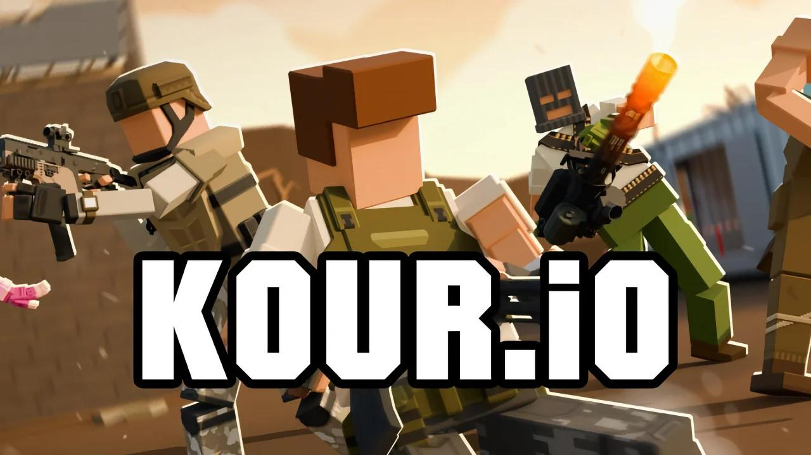
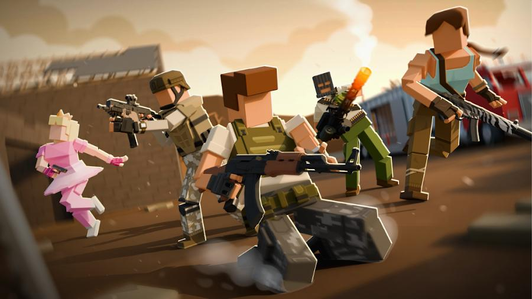
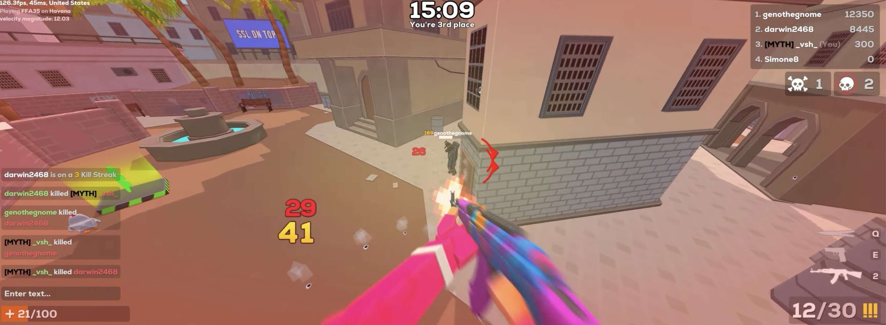

Kour.io is what happens when you fuse parkour movement with class-based FPS combat and throw in seven different game modes for good measure. It's a browser shooter that actually rewards mechanical skill — wall-running, bunny hopping, and dash chaining are core mechanics, not gimmicks. With 13 unique classes each carrying their own weapon and HP pool, there's real strategic depth here.
The progression system keeps you grinding: earn Kour Points (KP) through kills and missions, unlock skins, crates, hats, and emotes. There's a clan system, a map editor, and leaderboards with daily, monthly, and all-time rankings. For a game you can play instantly in your browser, the content depth is surprising.
Game Overview
Kour.io drops you into fast-paced multiplayer arenas where movement matters as much as aim. You're not just running and gunning — you're wall-running across vertical surfaces, bunny hopping to maintain momentum, and dashing through enemy fire. The parkour elements make every match feel dynamic, and the class system means you're always adapting your strategy based on who you're fighting.
Five official maps offer different tactical environments: Havana (tropical arena), Ghost Town (desert with rooftop combat), Snowstorm (icy battleground), Kour House (modern map with boost pads), and Legion HQ (office complex for tactical play). Each map rewards different playstyles — tight corridors favor the Brawler's shotgun, while open sightlines let the Hitman's sniper shine.
| Feature | Details |
|---|---|
| Game Type | Class-based FPS with Parkour Movement |
| Platform | Web Browser (Desktop, Chromebook, Tablet, Mobile) |
| Classes | 13 unique classes (9 starting + 4 unlockable) |
| Game Modes | FFA, TDM, Gun Game, Hardpoint, ParKour, MoonSnipe, KourSurf |
| Maps | 5 official maps + community-created maps |
| Price | Free (no download, no account required) |
Controls
Standard FPS controls plus parkour-specific keys. The E key for dash and wall-running are essential — practice those before jumping into competitive matches.
| Key | Action |
|---|---|
| WASD | Move |
| Space | Jump |
| Shift / C | Crouch / Slide |
| E | Dash |
| F | Inspect weapon |
| Mouse | Aim |
| Left Click | Shoot |
| Right Click | Aim Down Sights |
| R | Reload (50% faster during wall-run) |
The game supports gamepads for players who prefer analog input. On mobile, touch controls work but keyboard and mouse gives you a serious accuracy advantage — especially for parkour movement and headshots.
All 13 Classes
Each class in Kour.io has a unique weapon and HP value, creating distinct playstyles. Nine classes are available from the start. Four special classes — Juggernaut, Recon, Pyro, and Rayblader — unlock after you get 10 kills in a session.

| Class | Weapon | HP | Playstyle |
|---|---|---|---|
| Soldier | AK-47 | 100 | Versatile all-rounder, front-line combat |
| Hitman | Sniper Rifle | 90 | Long-range picks, precision headshots |
| Gunner | P90 | 90 | Close-range spray, high fire rate |
| Heavy | Machine Gun | 150 | Tank role, absorbs damage, area denial |
| Rocketeer | Rocket Launcher | 90 | Explosive damage, crowd control |
| Agent | Silenced MP5 | 100 | Stealth, flanking, info gathering |
| Brawler | Shotgun | 120 | Close-quarters combat, aggressive pushes |
| Assassin | FAMAS | 100 | Burst damage, eliminating high-value targets |
| Investor | Special | 100 | Strategic utility, supportive role |
| 🔓 Unlock at 10+ Kills | |||
| Juggernaut | Minigun | 130 | Sustained suppressive fire, area denial |
| Recon | Vector | 80 | Fast reconnaissance, information warfare |
| Pyro | Flamethrower | 110 | Zone control, damage over time |
| Rayblader | Laser Gun | 95 | Unique damage profile, futuristic combat |
Beginner recommendation: Start with Soldier (AK-47, 100 HP). It's balanced, effective at most ranges, and forgiving if you're still learning movement mechanics. Once you're comfortable, try Hitman for long-range sniping or Brawler for aggressive close-quarters play.
Unlock priority: Push for 10 kills early in your session to unlock all four special classes. Pyro's flamethrower dominates tight corridors, and Juggernaut's minigun provides unmatched suppressive fire in team modes.
Game Modes
Kour.io offers seven official game modes plus community-created modes. Each mode tests different skills — raw aim, teamwork, movement precision, or strategic positioning.
Free-for-All (FFA)
Classic deathmatch. Every player for themselves. Highest kill count wins. This is where you practice raw mechanics — aim, movement, and positioning. No teammates to carry you.
Team Deathmatch (TDM)
Two teams compete for the highest collective kill count. Communication and coordination matter here. Focus fire, cover teammates, and control map positions together.
Gun Game
Progress through different weapons as you score kills. Start with a knife, end with a sniper. This mode tests your versatility — you need to be effective with every weapon type, not just your favorite loadout.
Hardpoint
Capture and hold objective zones to score points. This is a team mode where positioning and map control beat raw aim. Defend the point, rotate when it moves, and coordinate with your squad.
ParKour
Shooting meets parkour racing. Navigate obstacle courses while dealing with enemy fire. This mode tests your movement mastery — wall-running, bunny hopping, and dash chaining are essential. It's also a great warm-up for competitive matches.
MoonSnipe
Low-gravity sniper battles. Jump higher, move slower in the air, and pick off enemies from impossible angles. The reduced gravity changes everything — positioning and timing matter more than reflexes.
KourSurf
Surfing mechanics combined with combat. Slide along surfaces, maintain momentum, and shoot enemies mid-surf. It's unique, chaotic, and surprisingly skill-intensive.

Tips & Strategies
Bunny hopping (B-hop) is the movement technique that separates pros from casuals in Kour.io. Here's the technique: press W + Space to start jumping, immediately release W, use only A and D to steer while airborne, and move your mouse smoothly in the strafe direction. Never press W during the hop — it kills momentum. Chain these jumps to maintain speed and make yourself incredibly hard to hit. Practice in ParKour mode first, then apply it in combat.
Some maps contain green laser zones that grant a temporary speed boost when you walk through them. Don't stumble into them accidentally — learn their locations on each map and use them intentionally. They let you rotate faster, reach Hardpoint zones before the enemy team, or escape after a kill streak when your health is low. Speed is life in Kour.io, and these zones are free acceleration.
Not all fights are even. If you're playing Recon (80 HP) and you walk into a Heavy (150 HP) in a hallway, the Heavy has nearly double your health before either player fires a shot. Knowing the HP values of common classes tells you which fights to take head-on and which to disengage from. Against high-HP targets, chip damage from cover or flanking routes wins more reliably than a direct shootout.
Here's a mechanic most players miss: reloading is 50% faster when you're wall-running. If you need to reload mid-fight, sprint-jump into a wall and reload while climbing. You'll cut your reload time in half and gain vertical positioning at the same time. Aggressive players use this to stay in fights longer without getting punished for the reload animation.
Getting 10 kills in a session unlocks Juggernaut (Minigun), Recon (Vector), Pyro (Flamethrower), and Rayblader (Laser Gun). These four classes offer specialized tools that the base roster doesn't cover. The Pyro's flamethrower dominates tight spaces like Kour House corridors, and the Juggernaut's minigun provides unmatched suppressive fire in TDM. Push for those 10 kills early so you have access to the full roster for the rest of your play session.
The Hitman's sniper, Assassin's FAMAS, and Soldier's AK-47 all reward headshot accuracy significantly. Body shots from a sniper may not kill a full-health target in one shot, but a headshot often will. If your chosen class uses a single-fire or burst weapon, spend the extra fraction of a second aiming at head level. On automatic weapons like the Gunner's P90, spray patterns start high, so beginning your burst at chest level naturally walks rounds into headshot territory.
Kour Points (KP) unlock skins, crates, hats, and emotes. Don't just grind kills — complete missions for bonus KP. Missions give you specific objectives (win matches with certain classes, get headshots, complete ParKour courses) that pay out more KP than random kills. Consistent mission completion is the fastest way to build your collection without spending hours in FFA mode.

FAQ
Yes, 100% free. No downloads, no sign-ups, no pay-to-win mechanics. Everything is earned through gameplay. Open kour.io in your browser and start playing immediately.
Get 10 or more kills in a single session. This unlocks Juggernaut (Minigun), Recon (Vector), Pyro (Flamethrower), and Rayblader (Laser Gun). Once unlocked, they're available for the rest of that play session.
Soldier (AK-47, 100 HP) is the best starting class. It's balanced, effective at most ranges, and forgiving if you're still learning movement mechanics. Once you're comfortable, branch out to Hitman for long-range play or Brawler for aggressive close-quarters combat.
Yes, the game supports touch controls on mobile browsers and has a dedicated Android app. However, keyboard and mouse gives a significant advantage for parkour movement and precision aiming.
Gun Game is a progression mode where you start with a knife and advance through different weapons by getting kills. Each kill upgrades your weapon. The first player to progress through all weapons and get a final kill wins. It tests your versatility with every weapon type in the game.
Earn KP through kills, completing missions, and winning matches. Missions give bonus KP for specific objectives. You can also earn free KP by watching ads in the settings menu. Spend KP on skins, crates, hats, and emotes in the shop.
Kour.io is proof that browser shooters can have real depth. The parkour movement system adds a mechanical skill layer that most .io games lack, the 13-class roster gives you strategic variety, and the seven game modes keep things fresh across sessions. Master bunny hopping, learn the class HP matchups, and don't sleep on ParKour mode — it's the best movement training ground in the game.
Ready to wall-run? Head to kour.io and start climbing the leaderboards.
Play Kour.io NowLast updated: June 20, 2026
Written by the iogameguide.com team